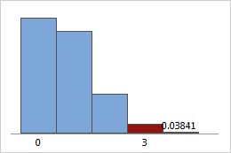

Definición: La estadística es la disciplina que se encarga de recolectar, organizar, analizar e interpretar datos para tomar decisiones.
Teoría de decisión: Utiliza métodos estadísticos para tomar decisiones óptimas en situaciones de incertidumbre.
Población: El conjunto completo de elementos o individuos que son objeto de estudio en una investigación.
Muestra aleatoria: Subconjunto de la población elegido de manera que cada individuo tenga la misma probabilidad de ser seleccionado.
Parámetros aleatorios: Características numéricas que describen una población y pueden variar de una muestra a otra.
1.2 Descripción de datos:
Datos agrupados y no agrupados:
Datos no agrupados: Cada observación es única y no se agrupan en categorías o intervalos.
Datos agrupados: Se organizan en categorías o intervalos para facilitar el análisis y la comprensión.
Frecuencia de clase:
El número de observaciones que caen en un intervalo específico en un conjunto de datos agrupados.
Frecuencia relativa:
El cociente entre la frecuencia de una clase y el total de observaciones en el conjunto de datos, mostrando la proporción o porcentaje de observaciones en una clase en relación con el total.
Punto medio:
El valor central de un intervalo de clase en un conjunto de datos agrupados, calculado sumando los límites inferior y superior del intervalo y dividiendo por 2.
Límites:
Los valores que definen los extremos de un intervalo de clase en datos agrupados, pueden ser límites inferior y superior, determinando el rango de valores que se incluyen en una clase.
1.3 Medidas de tendencia central:
Medidas de tendencia central:
Media aritmética: El promedio de un conjunto de datos, calculado sumando todos los valores y dividiendo por el número de observaciones.
Media geométrica: La raíz n-ésima del producto de n números, donde n es el número de elementos en el conjunto de datos.
Media ponderada: El promedio de un conjunto de datos en el que cada valor tiene un peso específico asignado.
Mediana: El valor central en un conjunto de datos ordenados, que divide el conjunto en dos partes iguales.
Moda: El valor que aparece con mayor frecuencia en un conjunto de datos.
Medidas de dispersión:
Varianza: La medida de dispersión que representa la variabilidad de los datos respecto a la media, calculada como la media de los cuadrados de las desviaciones de cada valor respecto a la media.
Desviación estándar: La raíz cuadrada de la varianza, que proporciona una medida de dispersión en la misma unidad que los datos originales.
Desviación media: La media de las desviaciones absolutas de los valores respecto a la media.
Desviación mediana: La mediana de las desviaciones absolutas de los valores respecto a la mediana.
Rango: La diferencia entre el valor máximo y el valor mínimo en un conjunto de datos.
1.4 Parámetros para datos agrupados:
Media aritmética ponderada: Una medida de tendencia central que tiene en cuenta los pesos asignados a cada clase en un conjunto de datos agrupados.
Media ponderada: El promedio ponderado de un conjunto de datos agrupados, donde se tienen en cuenta tanto los valores como sus frecuencias.
Mediana para datos agrupados: Una medida de tendencia central para datos agrupados que se encuentra en el intervalo que contiene la mediana de los datos originales.
Moda para datos agrupados: El valor o intervalo de valores con la mayor frecuencia en un conjunto de datos agrupados.
Desviación estándar para datos agrupados: La medida de dispersión que tiene en cuenta la agrupación de los datos, calculada a partir de las frecuencias y los valores de las clases.
1.5 Distribución de frecuencias:
Las distribuciones de frecuencias son tablas en que se dispone las modalidades de la variable por filas. En las columnas se dispone el número de ocurrencias por cada valor, porcentajes, etc.
La finalidad de las agrupaciones en frecuencias es facilitar la obtención de la información que contienen los datos
1.6 Técnicas de agrupación de datos:
Rango: La diferencia entre el valor máximo y el valor mínimo en un conjunto de datos, que puede utilizarse para determinar el tamaño de los intervalos de clase.
Método de Sturges: Una técnica para determinar el número óptimo de clases en una distribución de frecuencias basada en la raíz cuadrada del tamaño de la muestra.
Método de Scott: Un método para determinar el ancho de clase en una distribución de frecuencias basado en la varianza de los datos y el tamaño de la muestra.
Método de Freedman-Diaconis: Un método para determinar el ancho de clase en una distribución de frecuencias basado en el rango intercuartílico de los datos y el tamaño de la muestra.
Método de Doane: Un método para determinar el número óptimo de clases en una distribución de frecuencias basado en la asimetría de los datos.
1.7 Técnicas de muestreo:
Muestreo aleatorio simple: Una técnica en la que cada elemento de la población tiene la misma probabilidad de ser seleccionado para la muestra.
Muestreo estratificado: Una técnica en la que la población se divide en grupos homogéneos llamados estratos, y luego se selecciona una muestra aleatoria de cada estrato.
Muestreo por conglomerados: Una técnica en la que la población se divide en grupos heterogéneos llamados conglomerados, y luego se selecciona un número de conglomerados para formar la muestra.
Muestreo sistemático: Una técnica en la que los elementos de la población se eligen a intervalos regulares a partir de una lista ordenada.
Muestreo por conveniencia: Una técnica en la que los elementos se seleccionan en función de su conveniencia o disponibilidad para el investigador.
Tema 2: Fundamentos de la teoria de la probabilidad
2.1 Técnicas de Conteo
2.1.1 Principio aditivo
El principio aditivo establece que si un evento puede ocurrir de \( m \) maneras diferentes y otro evento independiente de ese puede ocurrir de \( n \) maneras diferentes, entonces hay \( m + n \) maneras diferentes en las que al menos uno de los eventos puede ocurrir.
2.1.2 Principio multiplicativo
El principio multiplicativo establece que si un evento puede ocurrir de \( m \) maneras diferentes y otro evento independiente de ese puede ocurrir de \( n \) maneras diferentes, entonces hay \( m × n \) maneras diferentes en las que ambos eventos pueden ocurrir en secuencia.
2.1.3 Notación factorial
La notación factorial se representa como \( n! \) y representa el producto de todos los enteros positivos menores o iguales a \( n \). Por ejemplo, $$5! = 5 × 4 × 3 × 2 × 1 = 120$$.
2.1.4 Permutaciones
Las permutaciones son el número de arreglos ordenados de \( r \) elementos tomados de \( n \) elementos distintos. Se denota como $$ nPr = \frac{n!}{(n-r)!}$$.
2.1.5 Combinaciones
Las combinaciones son el número de subconjuntos no ordenados de \( r \) elementos tomados de \( n \) elementos distintos. Se denota como $$ nCr = \binom{n}{r} = \frac{n!}{r!(n-r)!}$$.
2.1.6 Diagrama de Árbol
El diagrama de árbol es una representación gráfica que ayuda a visualizar todas las posibles ramas de decisiones y sus resultados en un proceso de conteo.
2.1.7 Teorema del Binomio
El teorema del binomio establece cómo expandir \((a + b)^n \) utilizando la fórmula $$(a + b)^n = \sum_{k=0}^{n} \binom{n}{k} a^{n-k} b^k$$.
2.2 Teoría elemental de probabilidad
La teoría elemental de probabilidad estudia los experimentos aleatorios y los eventos que pueden ocurrir en esos experimentos. Se basa en conceptos como el espacio muestral, eventos, y la asignación de probabilidades a esos eventos.
2.3 Probabilidad de Eventos
Espacio muestral: Conjunto de todos los posibles resultados de un experimento.
Evento: Subconjunto del espacio muestral.
Simbología: Usualmente se utilizan letras mayúsculas para representar conjuntos y letras minúsculas para representar eventos específicos.
Unión e intersección: Operaciones entre eventos que representan, respectivamente, que al menos uno o ambos eventos ocurren, y que ambos eventos ocurren simultáneamente.
Diagramas de Venn: Diagramas que ilustran las relaciones entre conjuntos y eventos mediante áreas superpuestas.
2.4 Probabilidad con Técnicas de Conteo
Incorpora las técnicas de conteo en la asignación de probabilidades a eventos y la resolución de problemas de probabilidad.
2.5 Probabilidad condicional
Dependiente e independiente: Eventos dependientes son aquellos cuya ocurrencia está afectada por la ocurrencia de otro evento. Eventos independientes son aquellos cuya ocurrencia no está afectada por otro evento.
Ley multiplicativa:\( P(A ∩ B) = P(A) × P(B | A) \), donde \( P(B | A) \) es la probabilidad de \( B \) dado \( A \).
2.6 Ley multiplicativa
La ley multiplicativa establece cómo calcular la probabilidad conjunta de dos eventos, generalizando la probabilidad condicional para eventos independientes.
2.7 Eventos independientes
Regla de Bayes: Permite actualizar la probabilidad de un evento dado nueva evidencia.
Una variable aleatoria es discreta cuando sólo puede tomar unos ciertos valores enteros en un número finito de valores o infinito numerable. Por ejemplo, número de caras obtenidas al lanzar tres monedas: 0, 1, 2, 3. Las variables discretas representan algo que podemos contar, y no suelen llevar decimales.
3.1.1 Distribución de probabilidad en forma general
La distribución de probabilidad de una variable aleatoria discreta especifica las probabilidades asociadas con cada valor posible que puede tomar la variable. y debe cumplir las siguientes condiciones:
0 < P(Xi) < 1
Σi=1N P(Xi) = 1
3.1.2 Valor esperado
El valor esperado o esperanza matemática de una variable aleatoria discreta se calcula como la suma ponderada de todos los posibles valores que puede tomar la variable, multiplicados por sus probabilidades respectivas.
3.1.3 Varianza, desviación estándar
La varianza y la desviación estándar son medidas de dispersión que describen qué tan dispersos están los valores de una variable aleatoria discreta respecto a su valor esperado, Y se calcula de la siguiente manera:
Mientras que la desviación estándar solo es la raiz cuadrada de la varianza
3.1.4 Función acumulada
La función de distribución acumulativa (CDF) de una variable aleatoria discreta da la probabilidad acumulada de que la variable tome un valor menor o igual a un valor dado.
3.2 Variables Aleatorias Continuas
Es aquella cuyo dominio de definición (campo de variación) es un intervalo (compacto) de la recta real , una unión de varios intervalos , o la totalidad de la recta real. (Por lo tanto los valores definidos de la variable aleatoria son un conjunto infinito no numerable .)
3.2.1 Distribución de probabilidad en forma general
En el caso de variables aleatorias continuas, la distribución de probabilidad se describe mediante una función de densidad de probabilidad (PDF), que especifica las probabilidades relativas de que la variable tome diferentes valores en un intervalo continuo.
3.2.2 Valor esperado
El valor esperado de una variable aleatoria continua se calcula como la integral del producto del valor posible de la variable y la función de densidad de probabilidad.
3.2.3 Varianza, desviación estándar
Al igual que en el caso discreto, la varianza y la desviación estándar de una variable aleatoria continua miden la dispersión de sus valores respecto a su valor esperado. Y se calcula de la siguiente manera:
Mientras que la desviación estándar solo es la raiz cuadrada de la varianza
3.2.4 Función acumulada
La función de distribución acumulativa (CDF) para variables aleatorias continuas indica la probabilidad acumulada de que la variable tome un valor menor o igual a un valor dado.
\( P(X \leq x) \)
3.2.5 Cálculos de probabilidad
Para variables aleatorias continuas, los cálculos de probabilidad se realizan mediante integrales de la función de densidad de probabilidad en intervalos específicos.
Las distribuciones de probabilidad son funciones matemáticas que describen la probabilidad de ocurrencia de diferentes resultados en un experimento aleatorio. Cada distribución se aplica a diferentes tipos de situaciones dependiendo de las características del fenómeno estudiado.
4.1 Función de probabilidad
Es una función matemática que asigna a cada evento de un espacio muestral una probabilidad de ocurrencia. Para una variable aleatoria discreta, la función de probabilidad se conoce como función de masa de probabilidad, y para una variable aleatoria continua, se conoce como función de densidad de probabilidad.
\( P(X = x) = P(x) \)
4.2 Distribución binomial
Modela el número de éxitos en una secuencia de ensayos independientes de un experimento, cada uno con dos resultados posibles (éxito o fracaso), con una probabilidad fija de éxito.
La fórmula para calcularla es:
\( f(k; n, p) = \binom{n}{k} p^k (1-p)^{n-k} \)
Donde:
\(f(k; n, p) \): Probabilidad de obtener exactamente \( k \) éxitos.
Describe el número de éxitos en una muestra extraída sin reemplazo de una población finita, dividida en dos grupos (éxito y fracaso), donde el número de éxitos en la muestra es de interés.

La fórmula para calcularla es:
\( f(k; N, n, K) = \frac{\binom{K}{k} \binom{N-K}{n-k}}{\binom{N}{n}} \)
Donde:
\( f(k; N, n, K) \): Probabilidad de obtener exactamente \( k \) éxitos en la muestra.
\( N \): Tamaño total de la población.
\( K \): Número total de elementos en la población que son de interés (éxitos).
\( n \): Tamaño de la muestra (número de ensayos).
\( \binom{N}{n} \): Coeficiente binomial que representa el número de formas de seleccionar \( n \) elementos de un conjunto de \( N \) elementos.
4.4 Distribución de Poisson
Modela el número de eventos que ocurren en un intervalo de tiempo o espacio fijo, cuando estos eventos ocurren de manera independiente a una tasa promedio constante.
\( f(k; \lambda) \): Probabilidad de observar exactamente \( k \) eventos.
\( \lambda \): Parámetro de la distribución de Poisson, que representa la tasa promedio de eventos por intervalo de tiempo o espacio.
\( k \): Número de eventos que queremos evaluar.
\( e \): Base del logaritmo natural (aproximadamente \( 2.71828 \)).
\( k! \): Factorial de \( k \), que es el producto de todos los enteros positivos menores o iguales a \( k \).
4.5 Distribución normal
Es una de las distribuciones más importantes en estadística. Es continua y simétrica alrededor de su media. Muchos fenómenos naturales siguen aproximadamente esta distribución.
Utilizada para inferencias estadísticas sobre la media de una población cuando el tamaño de la muestra es pequeño y/o la desviación estándar de la población es desconocida.
Se utiliza principalmente para probar la independencia de dos conjuntos de datos categóricos y para probar la bondad de ajuste de un modelo estadístico a un conjunto de datos observados.
\( f(x; k) \): Función de densidad de probabilidad de la distribución Chi-cuadrada.
\( x \): Variable aleatoria que sigue la distribución Chi-cuadrada.
\( k \): Parámetro de la distribución Chi-cuadrada, que representa los grados de libertad.
\( \Gamma \): Función gamma, que es una generalización del factorial para números reales y complejos.
4.8 Distribución F
Se utiliza para comparar la varianza de dos poblaciones normales independientes. Se emplea comúnmente en análisis de varianza y en pruebas de regresión para comparar varianzas entre dos o más grupos.
La regresión lineal y la correlación son dos conceptos estadísticos estrechamente relacionados que se utilizan para analizar la relación entre dos variables.
5.1.1 Diagrama de dispersión
Un diagrama de dispersión es una representación gráfica de la relación entre dos variables. Se crea trazando los puntos de datos para cada variable en un plano cartesiano. La variable independiente (variable predictora) se representa en el eje horizontal \( X \) y la variable dependiente (variable de respuesta) se representa en el eje vertical \( Y \). Al observar la distribución de los puntos de datos en el diagrama de dispersión, se puede obtener una idea visual de la fuerza y la dirección de la relación entre las variables.
5.1.2 Regresión lineal simple
La regresión lineal simple es un modelo estadístico que describe la relación lineal entre una variable independiente \( X \) y una variable dependiente \( Y \). El modelo se representa mediante una ecuación de línea recta:
\( Y = β0 + β1 * X + ε \)
Donde:
\( Y \) es la variable dependiente
\( X \) es la variable independiente
\( β0 \) es el intercepto de la línea (el valor de Y cuando X = 0)
\( β1 \) es la pendiente de la línea (la cantidad en que cambia Y por cada unidad de cambio en X)
\( ε \) es el término de error (representa la variabilidad no explicada por el modelo)
El objetivo de la regresión lineal simple es encontrar los valores de \( β0 \) y \( β1 \) que mejor se ajusten a los datos observados. Esto se puede hacer utilizando métodos como los mínimos cuadrados.
5.1.3 Correlación
La correlación mide la fuerza y la dirección de la relación lineal entre dos variables. Se expresa mediante un coeficiente de correlación, que se representa con la letra \( r \). El valor de \( r \) puede variar entre -1 y 1:
\( r = 1 \): indica una correlación positiva perfecta, lo que significa que las dos variables aumentan o disminuyen juntas en la misma proporción.
\( r = 0 \): indica que no hay correlación lineal entre las variables.
\( r = -1 \): indica una correlación negativa perfecta, lo que significa que a medida que una variable aumenta, la otra disminuye en la misma proporción.
En general, un valor absoluto de \( r \) más cercano a 1 indica una relación más fuerte entre las variables, ya sea positiva o negativa.
5.1.4 Determinación y análisis de los coeficientes de correlación y de determinación
Coeficiente de correlación: El coeficiente de correlación \( r \) mide la fuerza y la dirección de la relación lineal entre dos variables. Se interpreta como la proporción de la variabilidad total de la variable dependiente que puede explicarse por la variabilidad de la variable independiente.
Coeficiente de determinación: El coeficiente de determinación \( R² \) es el cuadrado del coeficiente de correlación \( r² \). Representa la proporción de la variabilidad total de la variable dependiente que puede explicarse por el modelo de regresión lineal. Un valor de \( R² \) cercano a 1 indica que el modelo explica una gran parte de la variabilidad de la variable dependiente.
5.1.5 Distribución normal bidimensional
La distribución normal bidimensional es una distribución de probabilidad conjunta que describe la distribución de dos variables aleatorias continuas. Se caracteriza por una superficie en forma de campana que se eleva sobre el plano cartesiano. La forma y la orientación de la superficie dependen de la correlación entre las variables.
5.1.6 Intervalos de confianza
Los intervalos de confianza son rangos de valores que tienen una alta probabilidad de contener el valor verdadero de un parámetro desconocido. Se calculan utilizando la distribución muestral de la estadística de prueba. En el contexto de la regresión lineal, los intervalos de confianza se pueden utilizar para estimar el valor verdadero de los coeficientes de regresión \( β0 \) y \( β1 \) y la media de la variable dependiente para un valor dado de la variable independiente.